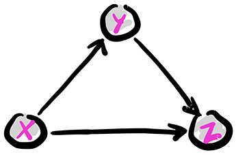
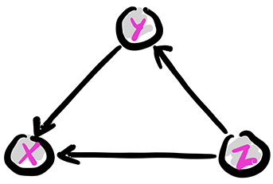
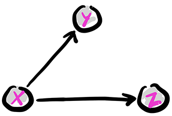
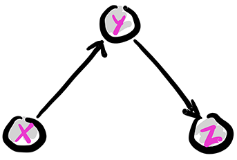
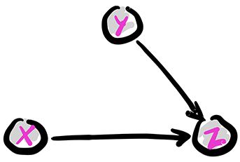
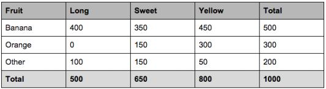
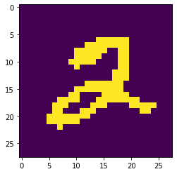
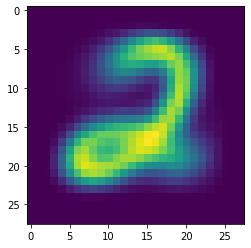
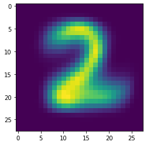

\(\newcommand{\P}{\mathbb{P}}\) \(\newcommand{\E}{\mathbb{E}}\) \(\newcommand{\S}{\mathcal{S}}\) \(\newcommand{\var}{\mathrm{Var}}\) \(\newcommand{\btheta}{\boldsymbol{\theta}}\) \(\newcommand{\bphi}{\boldsymbol{\phi}}\) \(\newcommand{\bpi}{\boldsymbol{\pi}}\) \(\newcommand{\bmu}{\boldsymbol{\mu}}\) \(\newcommand{\blambda}{\boldsymbol{\lambda}}\) \(\newcommand{\bSigma}{\boldsymbol{\Sigma}}\) \(\newcommand{\balpha}{\boldsymbol{\alpha}}\) \(\newcommand{\indep}{\perp\!\!\!\perp}\) \(\newcommand{\bp}{\mathbf{p}}\) \(\newcommand{\bx}{\mathbf{x}}\) \(\newcommand{\bX}{\mathbf{X}}\) \(\newcommand{\by}{\mathbf{y}}\) \(\newcommand{\bY}{\mathbf{Y}}\) \(\newcommand{\bz}{\mathbf{z}}\) \(\newcommand{\bZ}{\mathbf{Z}}\) \(\newcommand{\bw}{\mathbf{w}}\) \(\newcommand{\bW}{\mathbf{W}}\) \(\newcommand{\pa}{\mathrm{pa}}\)
7.3. Modeling correlated random variables#
In this notebook, we discuss two standard techniques for constructing joint distributions from simpler building blocks: (1) marginalizing out an unobserved random variable and (2) imposing conditional independence relations. Combining them produces a large class of models known as probabilistic graphical models. As before, we make our derivations in the finite support case, but these can be adapted to continuous cases.
Our starting point for both techniques will be the product rule: if \(\bX = (X_1,\ldots,X_r)\) is a discrete random vector, then for any \(\bx = (x_1,\ldots,x_r) \in \S_{\mathbf{X}}\)
Hence, we can specify a joint distribution through a chain marginal and conditional distributions. Note that we can re-order the variables \(X_1, \ldots, X_r\) arbitrarily, giving rise to different representations.
7.3.1. Marginalizing out an unobserved random variable#
Mixtures are a natural way to define probability distributions. The basic idea is to consider a pair of random vectors \((\bX,\bY)\) and assume that \(\bY\) is unobserved. The effect on the observed vector \(\bX\) is that \(\bY\) is marginalized out. Indeed, by the law of total probability, for any \(\bx \in \S_\bX\)
where we used that the events \(\{\bY=\by\}\), \(\by \in \S_\bY\), form a partition of the probability space. We interpret this equation as defining \(p_\bX(\bx)\) as a convex combination - a mixture - of the distributions \(p_{\bX|\bY}(\bx|\by)\), \(\by \in \S_\bY\), with mixing weights \(p_\bY(\by)\). In general, we need to specify the full conditional probability distribution (CPD): \(p_{\bX|\bY}(\bx|\by), \forall \bx \in \S_{\bX}, \by \in \S_\bY\). But assuming that the mixing weights and/or CPD come from parametric families can help reduce the complexity of the model.
In particular, in the parametric context, this gives rise to a powerful approach to expanding distribution families. Suppose \(\{p_{\btheta}:\btheta \in \Theta\}\) is a parametric family of distributions. Let \(K \geq 2\), \(\btheta_1, \ldots, \btheta_K \in \Theta\) and \(\bpi = (\pi_1,\ldots,\pi_K) \in \Delta_K\). Suppose \(Y \sim \mathrm{Cat}(\bpi)\) and that the conditional distributions satisfy
We write this as \(\bX|\{Y=i\} \sim p_{\btheta_i}\). Then we obtain the mixture model
EXAMPLE: (Mixture of Multinomials) Let \(n, m , K \geq 1\), \(\bpi \in \Delta_K\) and, for \(i=1,\ldots,K\), \(\mathbf{p}_i = (p_{i1},\ldots,p_{im}) \in \Delta_m\). Suppose that \(Y \sim \mathrm{Cat}(\bpi)\) and that the conditional distributions are
Then \(\bX\) is a mixture of multinomials. Its distribution is then
\(\lhd\)
Next is an important continuous example.
EXAMPLE: (Gaussian mixture model) For \(i=1,\ldots,K\), let \(\bmu_i\) and \(\bSigma_i\) be the mean and covariance matrix of a multivariate normal distribution. Let \(\bpi \in \Delta_K\). A Gaussian Mixture Model (GMM) is obtained as follows: take \(Y \sim \mathrm{Cat}(\bpi)\) and
It has a probability density function of the form
This is illustrated below.
Figure: Density of a GMM (Source)

\(\bowtie\)
We could also consider continuous mixing distributions. Several standard approaches, e.g. probabilistic PCA, factor analysis and independent components analysis, use such mixtures. See [Bis, Chapter 12]. \(\lhd\)
NUMERICAL CORNER In Numpy, the module numpy.random also provides a way to sample from mixture models by using numpy.random.Generator.choice. This is better seen on an example.
seed = 535 # setting the seed
rng = np.random.default_rng(seed)
# constructs a mixture of three normal distributions,
# with prior probabilities [0.2, 0.5, 0.3]
mus = np.array([-2.0, 0.0, 3.0])
sigmas = np.array([1.2, 1.0, 2.5])
coeffs = np.array([0.2, 0.5, 0.3])
N = 5 # number of samples
which = rng.choice(3,N,p=coeffs)
rng.normal(mus[which],sigmas[which])
array([ 7.85481903, -0.14756359, -0.41493119, -0.26154523, 0.88082854])
\(\unlhd\)
7.3.2. Using conditional independence relations#
Another powerful approach is the use of conditional independence.
Reminder Recall the definition.
DEFINITION (Conditional Independence) Let \(A, B, C\) be events such that \(\P[C] > 0\). Then \(A\) and \(B\) are conditionally independent given \(C\), denoted \(A \indep B | C\), if
\(\natural\)
The following property will play a role.
LEMMA (Role of Independence) Let \(\bX, \bY, \bW\) be discrete random vectors such that \(\bX \indep \bY | \bW\). For all \(\bx \in \S_\bX\), \(\by \in \S_\bY\) and \(\bw \in \S_\bW\),
\(\flat\)
Proof: In a previous exercise, we showed that \(A \indep B | C\) implies \(\P[A | B\cap C] = \P[A | C]\). That implies the claim. \(\square\)
The basic configurations The case of three random variables exemplifies key probabilistic relationships. By the product rule, we can write
This is conveniently represented through a digraph where the vertices are the variables. Recall that an arrow \((i,j)\), from \(i\) to \(j\), indicates that \(i\) is a parent of \(j\) and that \(j\) is a child of \(i\). Let \(\pa(i)\) be the set of parents of \(i\). The digraph \(G = (V, E)\) below encodes the following sampling scheme, referred as ancestral sampling:
First we pick \(X\) according to its marginal \(\P[X=x]\). Note that \(X\) has no parent in \(G\).
Second we pick \(Y\) according to the CPD \(\P[Y=y|X=x]\). Note that \(X\) is the only parent of \(Y\).
Finally we pick \(Z\) according to the CPD \(\P[Z=z|X=x, Y=y]\). Note that the parents of \(Z\) are \(X\) and \(Y\).
Figure: The full case

\(\bowtie\)
Note that the graph above is acyclic, that is, it has no directed cycle. In particular, the ordering of variables \(X, Y, Z\) is a topological ordering, that is, an ordering of the vertices where all edges \((i,j)\) are such that \(i\) comes before \(j\).
The same joint distribution can be represented by a different digraph if the product rule is used in a different order. For instance,
is represented by the following digraph.
Figure: Another full case

\(\bowtie\)
The fork: Removing edges in the first graph above encodes conditional independence relations. For instance, removing the edge from \(Y\) to \(Z\) gives the following graph, known as a fork. We denote this configuration as \(Y \leftarrow X \rightarrow Z\).
Figure: The fork

\(\bowtie\)
The joint distribution simplifies as follows:
So, in this case, what has changed is that the CPD of \(Z\) does not depend on the value of \(Y\). That is, \(Z \indep Y|X\). Indeed, we can check that claim directly
as claimed.
The chain: Removing the edge from \(X\) to \(Z\) gives the following graph, known as a chain (or pipe). We denote this configuration as \(X \rightarrow Y \rightarrow Z\).
Figure: The chain

\(\bowtie\)
The joint distribution simplifies as follows:
In this case, what has changed is that the CPD of \(Z\) does not depend on the value of \(X\). Compare that to the fork. The corresponding conditional independence relation is \(Z \indep X|Y\). Indeed, we can check that claim directly
Now we have to use Bayes’ rule to get
as claimed.
The collider: Removing the edge from \(X\) to \(Y\) gives the following graph, known as a collider. We denote this configuration as \(X \rightarrow Z \leftarrow Y\).
Figure: The collider

\(\bowtie\)
The joint distribution simplifies as follows:
In this case, what has changed is that the CPD of \(Y\) does not depend on the value of \(X\). Compare that to the fork and the chain. This time we have \(X \indep Y\). Indeed, we can check that claim directly
as claimed.
Perhaps counter-intuitively, conditioning on \(Z\) makes \(X\) and \(Y\) dependent in general. This is known as explaining away or Berkson’s Paradox. Quoting my colleague Jordan Ellenberg:
Suppose Alex will only date a man if his niceness plus his handsomeness exceeds some threshold. Then nicer men do not have to be as handsome to qualify for Alex’s dating pool. So, among the men that Alex dates, Alex may observe that the nicer ones are less handsome on average (and vice versa), even if these traits are uncorrelated in the general population. Note that this does not mean that men in the dating pool compare unfavorably with men in the population. On the contrary, Alex’s selection criterion means that Alex has high standards. The average nice man that Alex dates is actually more handsome than the average man in the population (since even among nice men, the ugliest portion of the population is skipped). Berkson’s negative correlation is an effect that arises within the dating pool: the rude men that Alex dates must have been even more handsome to qualify.
7.3.3. Example 1: Naive Bayes#
The model-based justification for logistic regression in the previous section used a so-called discriminative approach, where the conditional distribution of the target \(y\) given the features \(\mathbf{x}\) is specified - but not the full distribution of the data \((\mathbf{x}, y)\). Here we give an example of the generative approach, which models the full distribution. For a discussion of the benefits and drawbacks of each approach, see for example here.
The Naive Bayes model is a simple discrete model for supervised learning. It is useful for document classification for instance, and we will use that terminology here to be concrete. We assume that a document has a single topic \(C\) from a list \(\mathcal{C} = \{1, \ldots, K\}\) with probability distribution \(\pi_k = \P[C = k]\). There is a vocabulary of size \(M\) and we record the presence or absence of a word \(m\) in the document with a Bernoulli variable \(X_m\), where \(p_{km} = \P[X_m = 1|C = k]\). We denote by \(\bX = (X_1, \ldots, X_M)\) the corresponding vector.
The conditional independence assumption comes next: we assume that, given a topic \(C\), the word occurrences are independent. That is,
Finally, the joint distribution is
Model fitting: Before using the model for prediction, one must first fit the model from training data \(\{\bx_i, c_i\}_{i=1}^n\). In this case, it means estimating the unknown parameters \(\bpi\) and \(\{\bp_k\}_{k=1}^K\), where \(\bp_k = (p_{k1},\ldots, p_{kM})\). For each \(k, m\) let
We use maximum likelihood estimation which, recall, entails finding the parameters that maximize the probability of observing the data
Here, as usual, we assume that the samples are independent and identically distributed. We take a logarithm to turn the products into sums and consider the negative log-likelihood
The negative log-likelihood can be broken up naturally into several terms that depend on different sets of parameters – and therefore can be optimized separately. First, there is a term that depends only on the \(\pi_k\)’s
The rest of the sum can be further split into \(KM\) terms, each depending only on \(p_{km}\) for a fixed \(k\) and m
So
We minimize these terms separately. We assume that \(N_k > 0\) for all \(k\).
We use a special case of maximum likelihood estimation, which we previously worked out in an example, where we consider the space of all probability distributions over a finite set. The maximum likelihood estimator in that case is given by the empirical frequencies. Notice that minimizing \(I_0(\bpi; \{\bx_i, c_i\})\) is precisely of this form: we observe \(N_k\) samples from class \(k\) and we seek the maximum likelihood estimator of, \(\pi_k\), the probability of observing \(k\). Hence the solution is simply
for all \(k\). Similarly, for each \(k\), \(m\), \(I_{km}\) is of that form as well. Here the states correspond to word \(m\) being present or absent in a document of class \(k\), and we observe \(N_{km}\) documents of type \(k\) where \(m\) is present. So the solution is
for all \(k, m\).
Prediction: To predict the class of a new document, it is natural to maximize over \(k\) the probability that \(\{C=k\}\) given \(\{\bX = \bx\}\). By Bayes’ rule,
As the denominator does not in fact depend on \(k\), maximizing \(\P[C=c_k | \bX = \bx]\) boils down to maximizing the numerator \(\pi_k \prod_{m=1}^M p_{km}^{x_m} (1-p_{km})^{1-x_m}\), which is straighforward to compute. Since the parameters are unknown, we use \(\hat{\pi}_k\) and \(\hat{p}_{km}\) in place of \(\pi_k\) and \(p_{km}\). As we did previously, we often take a negative logarithm, which has some numerical advantages, and we refer to it as the score
While maximum likehood estimation has desirable theoretical properties, it does suffer from overfitting. If for instance a particular word does not occur in any training document, then the probability of observing a new document containing that word is \(0\) for any class and the maximization problem above is not well-defined.
One approach to deal with this is Laplace smoothing
where \(\alpha, \beta > 0\), which can be justified using a Bayesian perspective.
NUMERICAL CORNER We implement the Naive Bayes model. We use Laplace smoothing to avoid overfitting issues.
We use a simple example from Towards Data Science:
Example: let’s say we have data on 1000 pieces of fruit. The fruit being a Banana, Orange or some other fruit and imagine we know 3 features of each fruit, whether it’s long or not, sweet or not and yellow or not, as displayed in the table below.

[…] Which should provide enough evidence to predict the class of another fruit as it’s introduced.
We encode the data into a table, where the rows are the classes and the columns are the features. The entries are the corresponding \(N_{km}\)’s. In addition we provide the vector \(N_k\), which is the last column above, and the value \(N\), which is the sum of the entries of \(N_k\).
N_km = np.array([[400., 350., 450.],[0., 150., 300.],[100., 150., 50.]])
def nb_fit_table(N_km, alpha=1., beta=1.):
K, M = N_km.shape
N_k = np.sum(N_km,axis=-1)
N = np.sum(N_k)
# MLE for pi_k's
pi_k = (N_k+alpha) / (N+K*alpha)
# MLE for p_km's
p_km = (N_km+beta) / (N_k[:,None]+2*beta)
return pi_k, p_km
We run it on our simple dataset.
pi_k, p_km = nb_fit_table(N_km)
print(pi_k)
[0.61495136 0.23092678 0.15412186]
print(p_km)
[[0.33361065 0.29201331 0.37520799]
[0.00221239 0.3340708 0.6659292 ]
[0.33443709 0.5 0.16887417]]
Continuing on with our previous example:
So let’s say we’re given the features of a piece of fruit and we need to predict the class. If we’re told that the additional fruit is Long, Sweet and Yellow, we can classify it using the [prediction] formula and subbing in the values for each outcome, whether it’s a Banana, an Orange or Other Fruit. The one with the highest probability (score) being the winner.
The next function computes the negative logarithm of \(\pi_k \prod_{m=1}^M p_{km}^{x_m} (1-p_{km})^{1-x_m}\), that is, the score of \(k\), and outputs a \(k\) achieving the minimum score.
def nb_predict(pi_k, p_km, x, label_set):
K = len(pi_k)
# Computing the score for each k
score_k = np.zeros(K)
for k in range(K):
score_k[k] += - np.log(pi_k[k])
score_k[k] += - np.sum(x * np.log(p_km[k,:]) + (1 - x)*np.log(1 - p_km[k,:]))
# Computing the minimum
argmin = np.argmin(score_k, axis=0)
minscr = np.max(score_k, axis=0)
return label_set[argmin]
We run it on our dataset with the additional fruit from the quote above.
label_set = ['Banana', 'Orange', 'Other']
x = np.array([1., 1., 1.])
nb_predict(pi_k, p_km, x, label_set)
'Banana'
\(\unlhd\)
7.3.4. Example 2: Mixtures of multivariate Bernoullis and the EM algorithm#
We consider now a mixture version of the previous example. Let again \(\mathcal{C} = \{1, \ldots, K\}\) be a collection of classes. Let \(C\) be a random variable taking values in \(\mathcal{C}\) and, for \(m=1, \ldots, M\), let \(X_i\) take values in \(\{0,1\}\). Define \(\pi_k = \P[C = c_k]\) and \(p_{km} = \P[X_m = 1|C = c_k]\) for \(m = 1,\ldots, M\). We denote by \(\bX = (X_1, \ldots, X_M)\) the corresponding vector of \(X_i\)’s and assume that the entries are conditionally independent given \(C\).
However, we assume this time that \(C\) itself is not observed. So the resulting joint distribution is the mixture
This type of model is useful in particular for clustering tasks, where the \(c_k\)’s can be thought of as different clusters. Similarly to what we did in the previous section, our goal is to infer the parameters from samples and then predict the class of an old or new sample given its features. The main - substantial - difference is that the true labels of the samples are not observed. As we will see, that complicates the task considerably.
Model fitting We first fit the model from training data \(\{\bx_i\}_{i=1}^n\). Recall that the corresponding class labels \(c_i\)’s are not observed. In this type of model, they are referred to as hidden or latent variables and we will come back to their inference below.
We would like to use maximum likelihood estimation, that is, maximize the probability of observing the data
As usual, we assume that the samples are independent and identically distributed. Consider the negative log-likelihood
Already, we see that things are potentially more difficult than they were in the supervised (or fully observed) case. The negative log-likelihood does not decompose into a sum of terms depending on different sets of parameters.
At this point, one could fall back on the field of optimization and use a gradient-based method to minimize the negative log-likelihood. Indeed that is an option, although note that one must be careful to account for the constrained nature of the problem (here the parameters sum to one). There is a vast array of constrained optimization techniques suited for this task.
Instead a more popular approach in this context, the EM algorithm, is based on the general principle of majorization-minimization, which we have encountered implicitly in the \(k\)-means algorithm and the convergence proof of gradient descent in the smooth case. We detail this important principle in the next subsection before returning to model fitting in mixtures.
Majorization-minimization Here is a deceptively simple, yet powerful observation. Suppose we want to minimize a function \(f : \mathbb{R}^d \to \mathbb{R}\). Finding a local minimum of \(f\) may not be easy. But imagine that for each \(\mathbf{x} \in \mathbb{R}^d\) we have a surrogate function \(U_{\mathbf{x}} : \mathbb{R}^d \to \mathbb{R}\) that (1) dominates \(f\) in the following sense
and (2) equals \(f\) at \(\mathbf{x}\)
We say that \(U_\mathbf{x}\) majorizes \(f\) at \(\mathbf{x}\). Then \(U_\mathbf{x}\) can be used to make progress towards minimizing \(f\), that is, find a point \(\mathbf{x}'\) such that \(f(\mathbf{x}') \leq f(\mathbf{x})\). If \(U_\mathbf{x}\) is easier to minimize than \(f\) itself, say because an explicit minimum can be computed, then this observation proved in the next lemma naturally leads to an iterative algorithm.
Figure: Majorization (Source)

\(\bowtie\)
LEMMA (Majorization-Minimization) Let \(f : \mathbb{R}^d \to \mathbb{R}\) and suppose \(U_{\mathbf{x}}\) majorizes \(f\) at \(\mathbf{x}\). Let \(\mathbf{x}'\) be a global minimum of \(U_\mathbf{x}\). Then
\(\flat\)
Proof: Indeed
where the first inequality follows from the domination property of \(U_\mathbf{x}\), the second inequality follows from the fact that \(\mathbf{x}'\) is a global minimum of \(U_\mathbf{x}\) and the equality follows from the fact that \(U_{\mathbf{x}}\) equals \(f\) at \(\mathbf{x}\). \(\square\)
We have already encountered this idea.
EXAMPLE: (Minimizing a smooth function) Let \(f : \mathbb{R}^d \to \mathbb{R}\) be \(L\)-smooth. By the Quadratic Bound for Smooth Functions, for all \(\mathbf{x}, \mathbf{z} \in \mathbb{R}^d\) it holds that
By showing that \(U_{\mathbf{x}}\) is minimized at \(\mathbf{z} = \mathbf{x} - (1/L)\nabla f(\mathbf{x})\), we previously obtained the descent guarantee
for gradient descent, which played a central role in the analysis of its convergence. \(\lhd\)
EXAMPLE: (\(k\)-means) Let \(\mathbf{x}_1,\ldots,\mathbf{x}_n\) be \(n\) vectors in \(\mathbb{R}^d\). One way to formulate the \(k\)-means clustering problem is as the minimization of
over the centers \(\bmu_1,\ldots,\bmu_K\), where recall that \([K] = \{1,\ldots,K\}\). For fixed \(\bmu_1,\ldots,\bmu_K\) and \(\mathbf{m} = (\bmu_1,\ldots,\bmu_K)\), define
and
for \(\blambda_1,\ldots,\blambda_K \in \mathbb{R}^d\). That is, we fix the optimal cluster assignments under \(\bmu_1,\ldots,\bmu_K\) and then vary the centers.
We claim that \(U_\mathbf{m}\) is majorizing \(f\) at \(\bmu_1,\ldots,\bmu_K\). Indeed
and
Moreover \(U_\mathbf{m}(\blambda_1,\ldots,\blambda_K)\) is easy to minimize. We showed previously that the optimal representatives are
where \(C_j = \{i : c_\mathbf{m}(i) = j\}\).
The Majorization-Minimization Lemma implies that
This argument is equivalent to our previous analysis of the \(k\)-means algorithm. \(\lhd\)
EM algorithm The Expectation-Maximization (EM) algorithm is an instantiation of the majorization-minimization principle that applies widely to parameter estimation of mixtures. Here we focus on the mixture of multivariate Bernoullis.
Here recall that the objective to be minimized is
To simplify the notation and highlight the general idea, we let \(\btheta = (\bpi, \{\bp_k\})\), denote by \(\Theta\) the set of allowed values for \(\btheta\), and use \(\P_{\btheta}\) to indicate that probabilities are computed under the parameters \(\btheta\). We also return to the description of the model in terms of the unobserved latent variables \(\{C_i\}\). That is, we write the negative log-likelihood as
To derive a majorizing function, we use the convexity of the negative logarithm. Indeed
The first step of the construction is not obvious - it just works. For each \(i=1,\ldots,n\), we let \(r_{k,i}^{\btheta}\), \(k=1,\ldots,K\), be a stricly positive probability distribution on \([K]\). In other words, it defines a convex combination for every \(i\). Then we use convexity to obtain the upper bound
which holds for any \(\tilde\btheta = (\tilde\bpi, \{\tilde\bp_k\}) \in \Theta\). We choose \(r_{k,i}^{\btheta} = \P_{\btheta}[C_i = k|\bX_i = \bx_i]\) (which for the time being we assume is strictly positive), denote the right-hand side of the inequality by \(U_{n}(\tilde\btheta|\btheta)\) (as a function of \(\tilde\btheta\)) and make two observations.
(1) Dominating property: For any \(\tilde\btheta \in \Theta\), the inequality above implies immediately that \(L_n(\tilde\btheta) \leq U_n(\tilde\btheta|\btheta)\).
(2) Equality at \(\btheta\): At \(\tilde\btheta = \btheta\),
The two properties above show that \(U_n(\tilde\btheta|\btheta)\), as a function of \(\tilde\btheta\), majorizes \(L_n\) at \(\btheta\).
LEMMA (EM Guarantee) Let \(\btheta^*\) be a global minimizer of \(U_n(\tilde\btheta|\btheta)\) as a function of \(\tilde\btheta\), provided it exists. Then
\(\flat\)
Proof: The result follows directly from the Majorization-Minimization Lemma. \(\square\)
What have we gained from this? As we mentioned before, using the Majorization-Minimization Lemma makes sense if \(Q_n\) is easier to minimize than \(L_n\) itself. Let us see why that is the case here.
The function \(Q_n\) naturally decomposes into two terms
Because \(r_{k,i}^{\btheta}\) depends on \(\btheta\) but not \(\tilde\btheta\), the second term is irrelevant to the opimization with respect to \(\tilde\btheta\).
If \(\btheta\) is our current estimate of the parameters, then the quantity \(r_{k,i}^{\btheta} = \P_{\btheta}[C_i = k|\bX_i = \bx_i]\) is our estimate of the probability that the sample \(\bx_i\) comes from cluster \(k\). So the first term above
is the expected negative log-likelihood of the fully observed data under our estimate of the cluster assignments. By fully observed, we mean that it includes the cluster variables \(C_i\). Of course, in reality, those variables are not observed, but we have estimated their probability distribution given the observed data \(\{\bx_i\}\), and we are taking an expectation with respect to that distribution.
The key observation is that minimizing \(Q_n(\tilde\btheta|\btheta)\) over \(\tilde\btheta\) is a variant of fitting a Naive Bayes model. And there is a straightforward formula for that. In essence that is because, when the cluster assignments are observed, the negative log-likehood decomposes: it naturally breaks up into terms that depend on separate sets of parameters, each of which can be optimized with a closed-form expression. The same happens with \(Q_n\).
E Step: Specifically,
where we defined, for \(k=1,\ldots,K\),
We have previously computed \(r_{k,i}^{\btheta} = \P_{\btheta}[C_i = k|\bX_i = \bx_i]\) for prediction under the Naive Bayes model. We showed that
which in this context is referred to as the responsibility that cluster \(k\) takes for data point \(i\).
M Step: Adapting our previous calculutions for fitting a Naive Bayes model, we get that \(Q_n(\tilde\btheta|\btheta)\) is minimized at
We used the fact that
since the conditional probability \(\P_{\btheta}[C_i = k|\bX_i = \bx_i]\) adds up to one when summed over \(k\).
To summarize, the EM algorithm works as follows in this case. Assume we have data points \(\{\bx_i\}_{i=1}^n\), that we have fixed \(K\) and that we have some initial parameter estimate \(\btheta^0 = (\bpi^0, \{\bp_k^0\}) \in \Theta\) with strictly positive \(\pi_k^0\)’s and \(p_{k,m}^0\)’s. For \(t = 0,1,\ldots, T-1\) we compute for all \(i \in [n]\), \(k \in [K]\), and \(m \in [M]\)
and
Provided \(\sum_{i=1}^n x_{i,m} > 0\) for all \(m\), the \(\eta_{k,m}^t\)’s and \(\eta_k^t\)’s remain positive for all \(t\) and the algorithm is well-defined. The EM Guarantee stipulates that the negative log-likelihood cannot deteriorate, although note that it does not guarantee convergence to a global minimum.
NUMERICAL CORNER We implement the EM algorithm for mixtures of multivariate Bernoullis. For this purpose, we adapt our previous Naive Bayes routines. We also allow for the possibility of using Laplace smoothing.
def responsibility(pi_k, p_km, x):
K = len(pi_k)
# Computing the score for each k
score_k = np.zeros(K)
for k in range(K):
score_k[k] += - np.log(pi_k[k])
score_k[k] += - np.sum(x*np.log(p_km[k,:]) + (1 - x)*np.log(1 - p_km[k,:]))
# Computing responsibilities for each k
r_k = np.exp(-score_k)/(np.sum(np.exp(-score_k)))
return r_k
def update_parameters(eta_km, eta_k, eta, alpha, beta):
K = len(eta_k)
# MLE for pi_k's
pi_k = (eta_k+alpha) / (eta+K*alpha)
# MLE for p_km's
p_km = (eta_km+beta) / (eta_k[:,None]+2*beta)
return pi_k, p_km
We implement the E and M Step next.
def em_bern(X, K, pi_0, p_0, maxiters = 10, alpha=0., beta=0.):
n, M = X.shape
pi_k = pi_0
p_km = p_0
for _ in range(maxiters):
# E Step
r_ki = np.zeros((K,n))
for i in range(n):
r_ki[:,i] = responsibility(pi_k, p_km, X[i,:])
# M Step
eta_km = np.zeros((K,M))
eta_k = np.sum(r_ki, axis=-1)
eta = np.sum(eta_k)
for k in range(K):
for m in range(M):
eta_km[k,m] = np.sum(X[:,m] * r_ki[k,:])
pi_k, p_km = update_parameters(eta_km, eta_k, eta, alpha, beta)
return pi_k, p_km
We test the algorithm on a very simple dataset.
X = np.array([[1., 1., 1.],
[1., 1., 1.],
[1., 1., 1.],
[1., 0., 1.],
[0., 1., 1.],
[0., 0., 0.],
[0., 0., 0.],
[0., 0., 1.]])
n, M = X.shape
K = 2
seed = 535
rng = np.random.default_rng(seed)
pi_0 = np.ones(K)/K
p_0 = rng.random((K,M))
pi_k, p_km = em_bern(X, K, pi_0, p_0, maxiters=100, alpha=0.01, beta=0.01)
print(pi_k)
[0.66500949 0.33499051]
print(p_km)
[[0.74982646 0.74982646 0.99800266]
[0.00496739 0.00496739 0.25487292]]
We compute the probability that the vector \((0, 0, 1)\) is in each cluster.
x_test = np.array([0., 0., 1.])
responsibility(pi_k, p_km, x_test)
array([0.32947702, 0.67052298])
To give a more involved example, we return to the MNIST dataset. There are two common ways to write a \(2\). Let’s see if a mixture of multivariate Bernoullis can find them. We load the dataset and extract the images labelled \(2\).
Show code cell source
# Download and load the MNIST dataset
mnist = datasets.MNIST(root='./data',
train=True,
download=True,
transform=transforms.ToTensor())
# Convert the dataset to a PyTorch DataLoader
train_loader = torch.utils.data.DataLoader(mnist,
batch_size=len(mnist),
shuffle=False)
# Extract images and labels from the DataLoader
imgs, labels = next(iter(train_loader))
imgs = imgs.squeeze().numpy()
labels = labels.numpy()
# Filter out images with label 2
mask = labels == 2
imgs2 = imgs[mask]
labels2 = labels[mask]
Next, we transform the images into vectors and convert into black and white by rounding.
X = np.round(imgs2.reshape(len(imgs2), -1))
We can convert back as follows.
Show code cell source
plt.figure()
plt.imshow(X[0,:].reshape((28,28)))
plt.show()

In this example, the probabilities involved are very small and the responsibilities are close to \(0\) or \(1\). We use a variant, called hard EM, which replaces responsibilities with the one-hot encoding of the largest responsibility.
def hard_responsibility(pi_k, p_km, x):
K = len(pi_k)
# Computing the score for each k
score_k = np.zeros(K)
for k in range(K):
score_k[k] += - np.log(pi_k[k])
score_k[k] += - np.sum(x*np.log(p_km[k,:]) + (1 - x)*np.log(1 - p_km[k,:]))
# Computing responsibilities for each k
argmin = np.argmin(score_k, axis=0)
r_k = np.zeros(K)
r_k[argmin] = 1
return r_k
def hard_em_bern(X, K, pi_0, p_0, maxiters = 10, alpha=0., beta=0.):
n, M = X.shape
pi_k = pi_0
p_km = p_0
for _ in range(maxiters):
# E Step
r_ki = np.zeros((K,n))
for i in range(n):
r_ki[:,i] = hard_responsibility(pi_k, p_km, X[i,:])
# M Step
eta_km = np.zeros((K,M))
eta_k = np.sum(r_ki, axis=-1)
eta = np.sum(eta_k)
for k in range(K):
for m in range(M):
eta_km[k,m] = np.sum(X[:,m] * r_ki[k,:])
pi_k, p_km = update_parameters(eta_km, eta_k, eta, alpha, beta)
return pi_k, p_km
We run the algorithm with \(2\) clusters. You may have to run it a few times to get a meaningful clustering.
n, M = X.shape
K = 2
pi_0 = np.ones(K)/K
p_0 = rng.random((K,M))
pi_k, p_km = hard_em_bern(X, K, pi_0, p_0, maxiters=10, alpha=1., beta=1.)
print(pi_k)
[0.43338926 0.56661074]
We vizualize the two uncovered clusters by rendering their means as an image. Here is one of them.
Show code cell source
plt.figure()
plt.imshow(p_km[0,:].reshape((28,28)))
plt.show()

Here is the other one.
Show code cell source
plt.figure()
plt.imshow(p_km[1,:].reshape((28,28)))
plt.show()

\(\unlhd\)